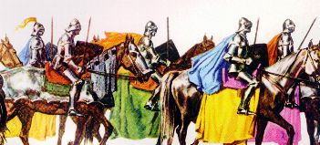
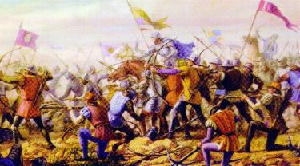

Pilatos una vez más, exagerando sus atribuciones, ordenó
la matanza de centenas de samaritanos en el Monte 
En consecuencia fue condenado por los superiores a quedarse 30 días enclaustrado, sin derecho al sueldo y simplemente con una comida y una botella de agua por día.
Él prefirió la drástica punición a sentirse con la conciencia pesada por el resto de su vida.
Terminado el cautiverio, había perdido casi 15 kilos de peso, estaba desnutrido y con problemas renales. De nuevo la caridad de Yossef ha venido en su ayuda y llevó Longino a su casa.
Por otro lado, después de la matanza de los samaritanos, las noticias llegaron rápidamente al Senado romano. Indignado con el hecho, ordenó a la presencia urgente de Pilatos para justificar su procedimiento y también explicar muchas otras imputaciones que había contra él.
Pilatos viajó a Roma para dar esclarecimientos de su conducta, pero tantos eran sus crímenes y desaciertos que él no consiguió justificarlos. Terminó con una muerte violenta.
Longinus fue rehabilitado... El oficial Cornelius que tenía gran estima por él fue quién llevó la buena noticia en la casa de Yossef donde él estaba.
En Italia, con la muerte de Tiberio César, Caligüela es proclamado el nuevo Emperador. En este mismo tiempo, un poderoso ejército de bárbaros, vinos del Este, hicieron ataques al Egipto por el puerto de Alejandría. Entonces el comando romano movió varias legiones para allí, con el objetivo de reforzar el contingente local. Y junto, siguió la guarnición de Longinus.
Antes de la salida, él visitó Yossef y dejó con él para guardar "La Lanza de la Pasión".

Garboso y lleno de ideal, él fue marchando resuelto al lado de sus compañeros, conduciendo la guapa bandera de la guarnición, como siempre, sirviendo la patria con dedicación y valor.
Fueran meses de intensos combates, con dificultades generalizadas, debido a la valentía y la ferocidad del enemigo que no desanimaba y no-se rendía.
La campaña militar completaba dos años de mucha lucha cuando Longinus fue herido con gravedad. Una espada otomana le cruzó el pecho y amputó su brazo izquierdo.
En un intervalo de la batalla, mientras los ejércitos rehacían sus planes y preparaban nuevas estocadas, el equipo de socorro, lo recogieron casi sin vida, en un charco de sangre, al lado de muchos cadáveres.
Llevado a la enfermería, fue medicado con prontitud y habilidad, pero se quedaba desacordado. Solamente se oía su respiración jadeante y los débiles latidos del corazón. Recuperó los sentidos de modo despacioso y se quedó durante tres semanas ingiriendo líquidos como comida. Su estado era desesperador.
La lucha ha continuado reñido y con ferocidad, sin presagio de cesar los combates.
Cuando él recuperó totalmente la conciencia, tuvo un susto, porque notó que estaba sin el brazo izquierdo. Quedó mutilado. Él, que siempre fue un hombre ágil con la espada, lleno de fuerza y valor en defensa de sus ideales, que se dedicaba a la ejecución correcta de sus deberes de soldado, demostrando ser poseedor de un gran sentido de responsabilidad en la vida militar, estaba desolado, él ha comprendido que estaba inválido para la legión. Nunca de nuevo podría desfilar al lado de sus compañeros, con el traje que tan orgullosamente vestía. Nunca de nuevo podría manejar la bandera victoriosa de su compañía, luchar por el Imperio, aumentar su gloria y su inmenso poder, además de defenderlo de los invasores, ayudando a dilatar sus inmensos territorios y mantener el orden en todos ellos, como siempre ha realizado en su cotidiano. Por eso lloró, Longinus lloró mucho, dolorosamente y con sufrimiento. Ningún pensamiento lo consolaba y ninguna ventaja podría sustituir su decepción y su tristeza, por no podré continuar cultivando su ideal nacionalista de servir militarmente al grandioso Imperio Romano.
Él estaba arrasado... Ideas terribles pasaban por su cabeza, porque también no-vía más "gracia" en la vida, murió su placer en vivir... Su existencia como soldado había acabado en aquello maldito combate. Ahora, él prefería morir que vivir mutilado
Así, en ese momento no adelantaba concejos y ni ponderaciones. Su espíritu estaba revoltoso e inquieto, nadie que alguien hiciese o hablase, aliviaba o traía cualquier lenitivo a su dolor.
El tratamiento se arrastró por meses, sin tener aparentemente alguna animadora mejora. Una inmensa herida permanecía abierta en su pecho, exigiendo constante cuidados en el tratamiento, para no infeccionar. Su estado era de verdad muy melindroso.
Él oficial Cornelius siempre atento, estaba a su lado y buscaba reanimarlo y encorajarlo. Sin embargo, como ellos tenían pocos recursos médicos en lo campo de la batalla, decidieron mandarlo a Jerusalén.
Fue un viaje difícil debido al polvo del camino, la falta de descanso, la alimentación deficiente y el uso de las medicaciones en situación desfavorables. Llegó casi muerto.
Aún en este tiempo, la gran amistad de Yossef llegó en su ayuda. Sabiendo lo que se pasó con Longinus, hizo todas las providencias para que él fuese para su casa y así, pudiese propiciarle los tratamientos y la atención necesaria.
Llovía mucho por ese día. Yossef estaba solo con Longinus en el cuarto y él estaba callado y taciturno. Por eso, buscó animarlo diciendo al amigo las noticias sobre los Discípulos de JESÚS y sobre las comunidades cristianas que crecían de una manera notable. Longinus solo oía y permanecía calado. Yossef insistió le hablando sobre el "ágape", sobre las celebraciones litúrgicas y las "misas" presididas principalmente por los Apóstoles Pedro, Andrés y Juan, no olvidándose de mencionar los muchos milagros que ellos hacían por la voluntad de DIOS NUESTRO SEÑOR.
Más Longinus permanecía calado con el pensamiento distante. En su mente se pasaba el filme de aquella misión en el Calvario... Con júbilo se recordaba que él estaba completamente curado de sus ojos, que no vertieron más lágrimas de una manera anormal y ni ellos estaban nublados, impidiéndolo su visión como se pasaba anteriormente. Miró su mano y otra sorpresa, vio que la mancha de la sangre de JESÚS tenía desaparecido totalmente. Un frío de satisfacción reavivó su espíritu, al mismo tiempo en que una idea confortadora dominó a su mente e hizo crecer violentamente una esperanza en su corazón. Agarrando el brazo de Yossef, pedió:
- Amigo, por favor, trágame la Lanza.
La herida en su pecho era muy grande y bastante intenso era su dolor con cualquier movimiento. Su respiración no era normal y siempre que era movido por la emoción, provocaba un acceso de tos que hacía la herida sangrar.
Yossef volvió trayendo cuidadosamente la Lanza y la acomodó en la cama, al lado
del brazo derecho de Longinus. El centurión lento y blando viró la mano, agarró
la Lanza y apretó con decisión. De repente, él sintió un temblor vigoroso
recorrer su cuerpo, tornando caliente su mano y su rostro, como si la
circulación sanguínea tuviese aumentado o como si él tuviese acercado del calor
ardiente de un horno. En su frontal, la transpiración creció y escurría por la
cara, mientras en las piernas y en los pies, una poderosa sensación agradable lo
ha involucrado y confortado. Su alma estaba atenta, en ansiedad, prenunciando
que algún evento notable estaba pasándose. En el pecho, y con precisión en el
lugar de la herida, la temperatura subió considerablemente y se tornó caliente
de una manera impresionante el área entero del pectoral, como si ella ha sido
cauterizada por un hierro en ascua. ¡En la verdad, en pocos secundo la inmensa
herida quedó cerrada! ¡Él estaba completamente curado!
Longinus. El centurión lento y blando viró la mano, agarró
la Lanza y apretó con decisión. De repente, él sintió un temblor vigoroso
recorrer su cuerpo, tornando caliente su mano y su rostro, como si la
circulación sanguínea tuviese aumentado o como si él tuviese acercado del calor
ardiente de un horno. En su frontal, la transpiración creció y escurría por la
cara, mientras en las piernas y en los pies, una poderosa sensación agradable lo
ha involucrado y confortado. Su alma estaba atenta, en ansiedad, prenunciando
que algún evento notable estaba pasándose. En el pecho, y con precisión en el
lugar de la herida, la temperatura subió considerablemente y se tornó caliente
de una manera impresionante el área entero del pectoral, como si ella ha sido
cauterizada por un hierro en ascua. ¡En la verdad, en pocos secundo la inmensa
herida quedó cerrada! ¡Él estaba completamente curado!
DIOS NUESTRO SEÑOR manifestó visiblemente Su infinita misericordia y bondad, cicatrizando la herida milagrosamente en el pecho de Longinus, curándole de modo instantáneo. De un salto, salió de la cama y vibró de emoción, feliz por el milagro que se ha pasado y demostró su gratitud a la grandeza de la paternal bondad del SEÑOR. Abrazado al amigo, alababa incesantemente a DIOS, mientras las lágrimas bajaron de sus ojos y dispersaba por su cara sonriente, dando expansión a una inmensa e ilimitada satisfacción.


Sin su brazo izquierdo, Longinus fue desligado oficialmente de la Legión Pretoriana y empezó a recibir un sueldo benéfico, en pagas de sus eficaces años de servicio.